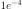
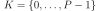
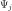
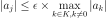
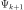
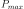

CleaningStrategy¶
- class CleaningStrategy(*args)¶
Cleaning truncation strategy.
- Available constructors:
CleaningStrategy(orthogonalBasis, maximumDimension)
CleaningStrategy(orthogonalBasis, maximumDimension, verbose)
CleaningStrategy(orthogonalBasis, maximumDimension, maximumSize, significanceFactor)
CleaningStrategy(orthogonalBasis, maximumDimension, maximumSize, significanceFactor, verbose)
- Parameters
- orthogonalBasis
OrthogonalBasis An OrthogonalBasis.
- maximumDimensionpositive int
Maximum index that can be used by the
EnumerateFunctionto determine the last term of the basis.- maximumSizepositve int
Parameter that characterizes the cleaning strategy. It represents the number of efficient coefficients of the basis. Its default value is set to 20.
- significanceFactorfloat
Parameter used as a threshold for selecting the efficient coefficients of the basis. The real threshold represents the multiplication of the significanceFactor with the maximum magnitude of the current determined coefficients. Its default value is equal to .
- verbosebool
Used for the online monitoring of the current basis updates (removed or added coefficients).
- orthogonalBasis
See also
Notes
The cleaning strategy aims at building a PC expansion containing at most
 significant coefficients, i.e. at most significant basis
functions. It proceeds as follows:
significant coefficients, i.e. at most significant basis
functions. It proceeds as follows:Generate an initial PC basis made of the
first polynomials
(according to the adopted EnumerateFunction), or equivalently an initial set of indices .Discard from the basis all those polynomials  associated with insignificance coefficients, i.e. the coefficients that satisfy:

where
 is the significance factor, default is
is the significance factor, default is
 .
.Add the next basis term  to the current basis
 .
.Reiterate the procedure until either
terms have been retained or if
the given maximum index  has been reached.
Examples
>>> import openturns as ot >>> ot.RandomGenerator.SetSeed(0) >>> # Define the model >>> inputDim = 1 >>> model = ot.SymbolicFunction(['x'], ['x*sin(x)']) >>> # Create the input distribution >>> distribution = ot.ComposedDistribution([ot.Uniform()]*inputDim) >>> # Construction of the multivariate orthonormal basis >>> polyColl = [0.0]*inputDim >>> for i in range(distribution.getDimension()): ... polyColl[i] = ot.StandardDistributionPolynomialFactory(distribution.getMarginal(i)) >>> enumerateFunction = ot.LinearEnumerateFunction(inputDim) >>> productBasis = ot.OrthogonalProductPolynomialFactory(polyColl, enumerateFunction) >>> # Truncature strategy of the multivariate orthonormal basis >>> # We want to select, among the maximumDimension = 100 first polynomials of >>> # the multivariate basis, those which have the maximumSize = 20 most >>> # significant contribution (greatest coefficients), with respect to the >>> # significance factor = 10^-4. >>> maximumDimension = 100 >>> maximumSize = 20 >>> significanceFactor = 1e-4 >>> adaptiveStrategy = ot.CleaningStrategy(productBasis, maximumDimension, ... maximumSize, significanceFactor)
Methods
Compute initial basis for the approximation.
getBasis()Accessor to the underlying orthogonal basis.
Accessor to the object's name.
Accessor to the current vector index.
getId()Accessor to the object's id.
Accessor to the maximum dimension of the orthogonal basis.
Accessor to the maximum size of the orthogonal basis.
getName()Accessor to the object's name.
getPsi()Accessor to the orthogonal polynomials of the basis.
Accessor to the object's shadowed id.
Accessor to the significance factor.
Accessor to the verbose.
Accessor to the object's visibility state.
hasName()Test if the object is named.
Test if the object has a distinguishable name.
setMaximumDimension(maximumDimension)Accessor to the maximum dimension of the orthogonal basis.
setMaximumSize(maximumSize)Accessor to the maximum size of the orthogonal basis.
setName(name)Accessor to the object's name.
setShadowedId(id)Accessor to the object's shadowed id.
setSignificanceFactor(significanceFactor)Accessor to the significance factor.
setVerbose(verbose)Accessor to the verbose.
setVisibility(visible)Accessor to the object's visibility state.
updateBasis(alpha_k, residual, relativeError)Update the basis for the next iteration of approximation.
- __init__(*args)¶
- getBasis()¶
Accessor to the underlying orthogonal basis.
- Returns
- basis
OrthogonalBasis Orthogonal basis of which the adaptive strategy is based.
- basis
- getClassName()¶
Accessor to the object’s name.
- Returns
- class_namestr
The object class name (object.__class__.__name__).
- getCurrentVectorIndex()¶
Accessor to the current vector index.
- Returns
- indexinteger
Current index of the basis term.
- getId()¶
Accessor to the object’s id.
- Returns
- idint
Internal unique identifier.
- getMaximumDimension()¶
Accessor to the maximum dimension of the orthogonal basis.
- Returns
- Pinteger
Maximum dimension of the truncated basis.
- getMaximumSize()¶
Accessor to the maximum size of the orthogonal basis.
- Returns
- sizeinteger
Maximum number of significant terms of the basis.
See also
- getName()¶
Accessor to the object’s name.
- Returns
- namestr
The name of the object.
- getPsi()¶
Accessor to the orthogonal polynomials of the basis.
- Returns
- polynomialslist of polynomials
Sequence of
analytical polynomials.
Notes
The method
computeInitialBasis()must be applied first.Examples
>>> import openturns as ot >>> productBasis = ot.OrthogonalProductPolynomialFactory([ot.HermiteFactory()]) >>> adaptiveStrategy = ot.FixedStrategy(productBasis, 3) >>> adaptiveStrategy.computeInitialBasis() >>> print(adaptiveStrategy.getPsi()) [1,x0,-0.707107 + 0.707107 * x0^2]
- getShadowedId()¶
Accessor to the object’s shadowed id.
- Returns
- idint
Internal unique identifier.
- getSignificanceFactor()¶
Accessor to the significance factor.
- Returns
- factorfloat
Value of the significance factor.
See also
- getVerbose()¶
Accessor to the verbose.
- Returns
- verbosebool
Return if the online monitoring of the current basis updates is enabled or not.
See also
- getVisibility()¶
Accessor to the object’s visibility state.
- Returns
- visiblebool
Visibility flag.
- hasName()¶
Test if the object is named.
- Returns
- hasNamebool
True if the name is not empty.
- hasVisibleName()¶
Test if the object has a distinguishable name.
- Returns
- hasVisibleNamebool
True if the name is not empty and not the default one.
- setMaximumDimension(maximumDimension)¶
Accessor to the maximum dimension of the orthogonal basis.
- Parameters
- Pinteger
Maximum dimension of the truncated basis.
- setMaximumSize(maximumSize)¶
Accessor to the maximum size of the orthogonal basis.
- Parameters
- sizeinteger
Maximum number of significant terms of the basis.
See also
- setName(name)¶
Accessor to the object’s name.
- Parameters
- namestr
The name of the object.
- setShadowedId(id)¶
Accessor to the object’s shadowed id.
- Parameters
- idint
Internal unique identifier.
- setSignificanceFactor(significanceFactor)¶
Accessor to the significance factor.
- Parameters
- factorfloat
Value of the significance factor.
See also
- setVerbose(verbose)¶
Accessor to the verbose.
- Parameters
- verbosebool
Enable the online monitoring of the current basis updates or not.
See also
- setVisibility(visible)¶
Accessor to the object’s visibility state.
- Parameters
- visiblebool
Visibility flag.
- updateBasis(alpha_k, residual, relativeError)¶
Update the basis for the next iteration of approximation.
Notes
No changes are made to the basis in the fixed strategy.